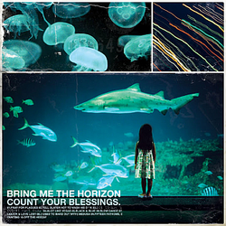
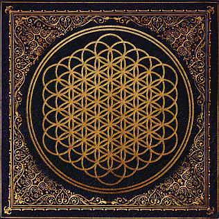
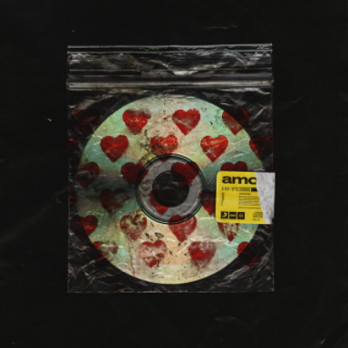
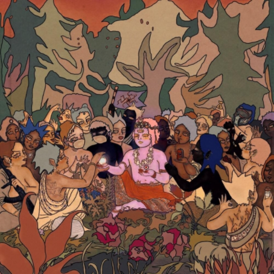
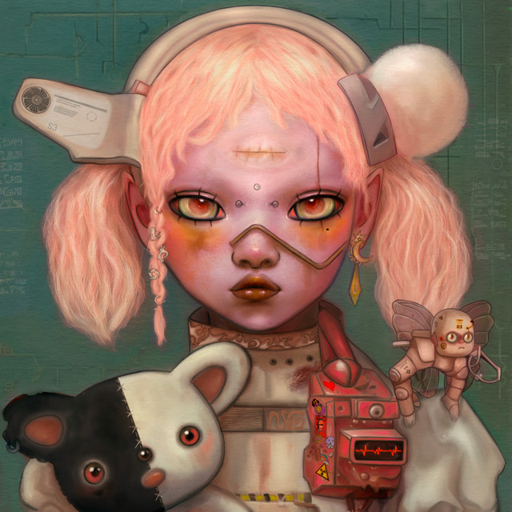
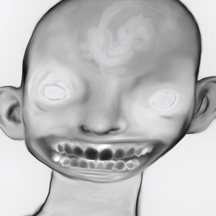
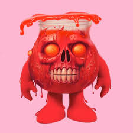

Bring Me the Horizon lançou vários álbuns de estúdio, incluindo:

Count Your Blessings (2006)

Sempiternal (2013)

Amo (2019)

Post Human: Survival Horror (2020)

Post Human: Nex Gen (2022)

DARKSIDE (2023)

Kool-AID (2024)
Voltar ao início